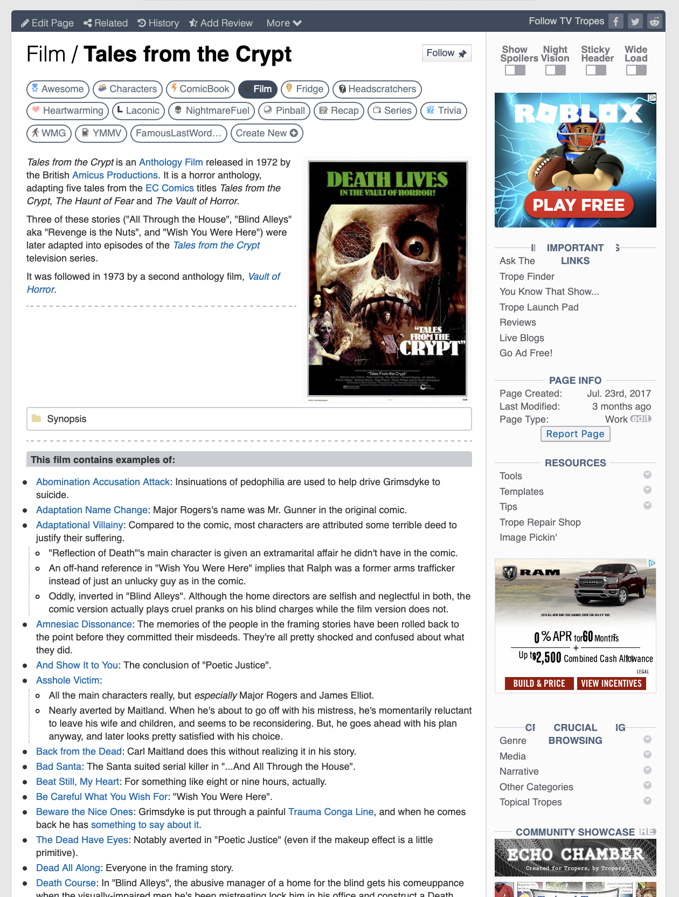
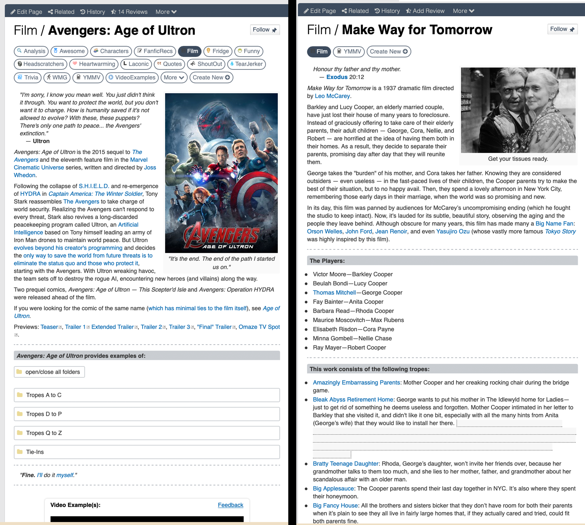
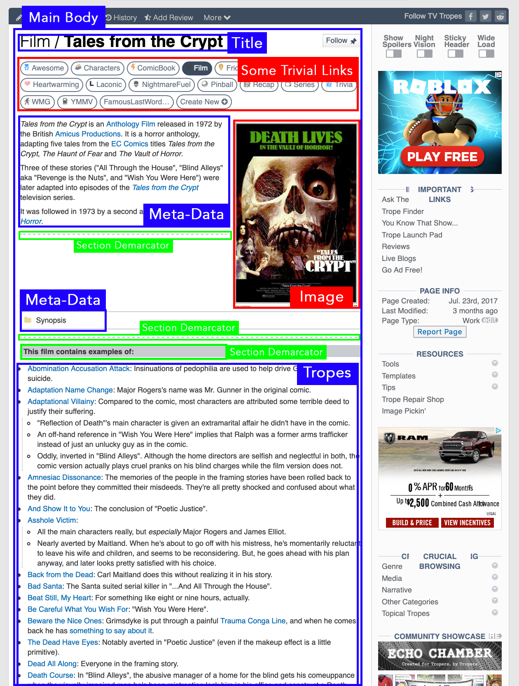
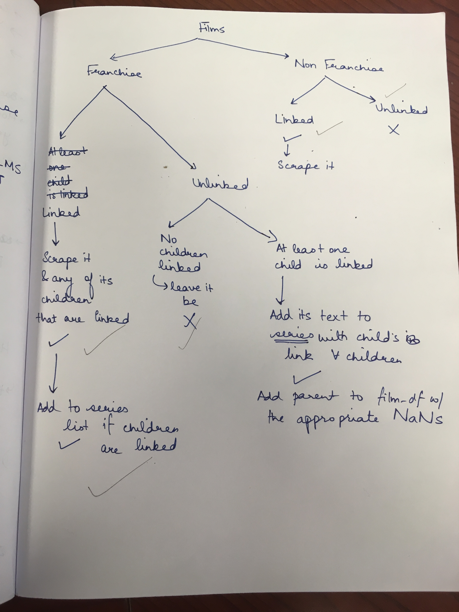

Sachita Nishal
3rd-Year PhD Student, Northwestern University
Lessons From a Massive(ly-Annoying) Scraping Project in Python
Hello!
I’m honestly quite unsure of what SEO miracle led you here, given the enthusiastically descriptive, but less than optimal title for this post. I’m further unsure of why you actually clicked this link when it showed up. But does that make me any less grateful that you’re here? Certainly not!
I wrote this post to document my experiences while scraping a massive crowdsourced website called TVTropes. During this venture, I spent many an afternoon quite desperately Googling “ugh web-scraping is so annoying save me python”. Consequently, due to an SEO miracle akin to the one brought you here, I found tons of websites which helped me with figuring out the coding bits, and I am extremely grateful for them. However, I didn’t feel like there was enough material out there that could guide me with regards to the broader approach that I could take with scraping and managing my dataset.
Luckily for me, I had people in my lab who gave me a ton of pragmatic ideas about how to scrape, process and store my data. What follows is the result of several such discussions I’ve had with my labmates over the course of the past month or so, and I hope documenting their result here can help anyone else who is ever in a similar position. I feel like it is important to specify here that I was working with textual data, and not numbers. The path to scraping something numerical might not be as long-winded as this was, but maybe the general practices here could still help.
So, this project that I undertook required me to scrape almost 13000 webpages from a nifty little website called TVTropes. All these pages followed a general template more or less, albeit with quite a generous definition of ‘general’ sometimes. What that means is that they were all kind of similar, but sometimes had small-yet-significant changes in how they structured their information.
Shown below is an example of a page from this website, which is one of the several that I would like to scrape.

The next image compares two other webpages from the site, both of which present their tropes in visibly different ways.
I'm now going to break down my process of scraping this dataset into a series of steps, and use the concrete examples of webpages for the rest of this post. I hope it will come in handy when I talk about some of the more abstract ideas behind the process.
Step 1: (What’s the Story) Morning Glory? 1
The first thing I learnt was that you need to broadly, but definitely define the reason you want to scrape a website, because it can go a long way in ensuring that your scraping process is streamlined and well-structured. Why?
Because it helps you to optimise how you organise your data while you scrape it, which will make the subsequent data cleaning and processing much smoother.
My broader goal was to understand analyse creativity in films, which I defined as the process of mixing and matching different ideas to give rise to something new. To ground this notion of ‘creativity’ in something slightly more tangible, I decided to look at tropes used in films, and how they evolve over time in their usage, as well as how they co-occur with and influence each other.
In the image from Vault of Horror a few paragraphs ago, you can see that all the tropes for a film are quite evidently in bullets, and this is a common feature (with minor exceptions) across the website. So at this stage, it would’ve been easy for me to say “Oh, okay, so I know I only really want the tropes, so I think I’m just going to pick up everything that is in the <li> tag, and I’m done!” In fact, that is exactly what I said! But then, one of my labmates told me something really important: scraping and cleaning are two different parts of the process, and should be treated that way.
What that practically translates into is this: it is important to not eliminate a lot of information early on, during the scraping stage itself. This is because when you’re moving on to actually processing and playing around with your data, you want to be able to choose what data you use, and what data you don’t. You might end up actually benefiting from some of the data that you thought wouldn’t help, but even if you don’t, it’s good to leave that choice of what you pick and what you reject to the later, more concrete planning stages.
And the reason why you need to know your broad-but-definite goal early on is simply to be efficient in your organisation of all this data that you’re scraping!
So by this stage, I knew that not only did I want to pick up tropes from films, I also wanted to pick up some possibly unstructured data which could be useful to me later. Logically, the next step was to now find out what differentiated all these types of information which were available to me on a webpage.
Step 2: The General Template, and its Exceptions
After figuring out the bigger picture for my project, I began looking at the different parts of the webpage, and mapping out how they are organised. I feel like acquainting myself with the broader template early gave good structure to my code, even if it wasn’t didn’t exhaust all the possibilties.
I started by randomly browsing a few webpages of different films on the website, and using the ‘Inspect Element’ to get decent idea of how some important tags are nested in the HTML file.

So in the image above, you can see that I’ve identified different zones on one of the webpages, and categorised them based on what sort of function they serve.
Looking at more pages on the website made me realise that the ‘Section Demarcators’(in green) are not really uniformly used, and that the meta-data for the film may or may not be in a folder (like the Synopsis is in a folder in the image above, but in some cases it might be just a paragraph). So I take note of these things as I keep exploring more pages. Sometimes, films list their tropes inside a folder, and sometimes, a single webpage has tropes for three different films within a franchise.
At this point, it is really easy to enthusiastically dive into the rabbit-hole of figuring out tons of exceptions to the general template, only to end up feeling extremely lost. Also I should probably stop saying “it is really easy to < insert possible goof up >” and should just skip ahead to “yeah so I did this stupid thing”.
But so, yes, at this point, I did this stupid thing where I got extremely caught up in cataloguing all the minute organisational/structural features each webpage had (folders, headers, bullets, paragraphs etc.), and it was really driving me crazy.
Here’s a sample that merely scratches the surface of the madness:

But I was very patiently counselled out of this manic state by one of the post-docs in my lab, and he pointed out something really crucial: understanding the template is important not so that you can find out each and every exception, but so that your code is flexible and can also deal with exceptions that you might not have been able to record.
Put simply, this means that it’s not worth trying to exhaustively cover all possible exceptions to the template. Invest effort in understanding the range of possibilities, and then debug for specific ones later.
It’s honestly a little difficult to know when to stop, but I found that once my if-else trees started going past 5-6 levels (because of course I had several if-else trees by this point), it was a good idea to hit the brakes. This exercise had helped me realise that the webpages were quite varied, even if only in subtle ways, and so I needed to make allowances for quite a lot of deviations in my code. It had served its purpose!
Step 3: I Couldn’t Think of a Joke about Cooking Up Soup, But Here’s a Trope Anyway2
Now is a good time to actually begin the scraping, and if you’re scraping webpages in python, you’re going to want to use BeautifulSoup with urllib, so make sure you have those set-up by this stage. You can find them both for conda, or you can get them with pip.
urllib does the job of requesting and opening URLs, while BeautifulSoup converts the HTML and XML files from those URLs into a parse tree which is easy to navigate and modify. Think of the parse tree as a tree made of HTML tags, all of which are related to each other in different ways: they could be siblings, or they could share a parent-child relationship on multiple nested levels. BeautifulSoup allows you to travel across the tree, identify these relationships, and access the attributes of individual tags in the tree.
Here’s an example of a parse tree:

Source: Vinay's Blog
Let’s go ahead and create our first soup. I’m using a different website to demonstrate this section because it is much simpler than a standard TVtropes page, making it easy to comprehend the parse tree.
# Importing requisite libraries
from bs4 import BeautifulSoup, Tag, NavigableString
from urllib.request import Request, urlopen
# An example link
link = 'https://katewagner.neocities.org/index.html'
#Query the website and return the html to the variable 'webpage'
#You need to send a User-Agent header in the request, because websites are typically designed for browsers that can parse HTML data, not programs in Jupyter Notebooks
req = Request(link, headers={'User-Agent': 'Mozilla/5.0'})
webpage = urlopen(req).read()
#Parse the html in the 'webpage' variable, and store it in Beautiful Soup format
soup = BeautifulSoup(webpage, features="html.parser")
We have now obtained the soup variable, which stores the parse tree from our webpage. We can now get a closer look at how tags are structured in the parse tree, so that we can start organising them as per our requirements.
#Printing the soup in a readable format
print(soup.prettify())
The output looks like this:
<!DOCTYPE html>
<html>
<head>
<meta charset="utf-8"/>
<title>
Kate Wagner
</title>
<!-- The style.css file allows you to change the look of your web pages.
If you include the next line in all your web pages, they will all share the same look.
This makes it easier to make new pages for your site. -->
<link href="https://fonts.googleapis.com/css?family=VT323" rel="stylesheet"/>
<link href="/style.css" media="all" rel="stylesheet" type="text/css"/>
</head>
<body>
<!-- navigation links -->
<a href="./index.html">
Home
</a>
<a href="./aboutme.html">
About Me
</a>
<a href="./clips.html">
Clips
</a>
<a href="./resume.html">
Resume
</a>
<!-- end navigation -->
<h1>
howdy there
</h1>
<h2>
I created
<a href="http://mcmansionhell.com">
McMansion Hell
</a>
</h2>
<p>
This is my personal website. it is currently
<a href="http://art.teleportacia.org/observation/vernacular/uc/" target="_blank">
<img src="https://web.archive.org/web/20090830115448/http://geocities.com/chankowkwai-ia/underconstruction3.gif"/>
</a>
</p>
<br/>
<br/>
<p>
<a href="https://thebaffler.com/salvos/404-page-not-found-wagner">
why does this website look like this?
</a>
</p>
<img src="https://web.archive.org/web/20090830221555/http://geocities.com/kc6brz/stars.gif"/>
<h2>
contents
</h2>
<ul>
<li>
<a href="#horrible things i like">
the horrible things i like
</a>
</li>
<li>
<a href="#horrible things ive done">
the horrible things i've done
</a>
</li>
</ul>
<div id="horrible things i like">
<h3>
the horrible things i like
</h3>
<ul>
<li>
living to see the warm sun rise over an unfeeling horizon
</li>
<li>
web design (one could say it is my passion)
</li>
</ul>
</div>
<div id="horrible things ive done">
<h3>
the horrible things i've done
</h3>
<p>
<a href="./resume.html">
view my resume
</a>
<br/>
<a href="./clips.html">
view my favorite clips
</a>
<br/>
<a href="./personal.html">
view a small log of my personal, unpublished writing for some reason
</a>
<br/>
</p>
</div>
<br/>
<br/>
<!--web counter-->
<a href="http://www.freevisitorcounters.com">
Free Counter
</a>
<script src="https://www.freevisitorcounters.com/auth.php?id=8748185d51c5e74d18cd1651af22770f5051aa6d" type="text/javascript">
</script>
<script src="https://www.freevisitorcounters.com/en/home/counter/439769/t/13" type="text/javascript">
</script>
</body>
</html>
The levels of indentation here indicate the hierarchical level of tags in the parse tree. Two tags at the same indentation are siblings, and a tag enclosed within another is a child. You can use different methods from the BeautifulSoup library to find tags that have specific names or attributes, find the siblings of tags, find the children of tags etc. The documentation is pretty straightforward, and very easy to understand.
Here are some easy methods to get started with:
import regex as re
# Find the first <a> tag
first_a_tag = soup.find("a")
# Find all <a> tags
soup.find_all("a")
# Find all the headings which use the word "things" - uses the regex library
soup.find_all(string=re.compile("things"))
# Find the next sibling of first_a_tag
first_a_tag.next_sibling
Once your parse tree is ready, it’s time to traverse it, and pick up whatever could be useful!
Step 4: Solving the Soup 3
Looking at the soup for my webpage, it became clear that some components were quite uselss. Things like advertisements, toolbars, menus and miscellaneous buttons would not serve any purpose to my broader goal. Using ‘Inspect Element’ from earlier, I’d figured out that all of the useful information was within the main body of the article, so that’s where I began looking.
<div class="article-content retro-folders" id="main-article">
<p>
</p>
<div class="quoteright" style="width:300px;">
<img alt="https://static.tvtropes.org/pmwiki/pub/images/img_1203_7.JPG" border="0" class="embeddedimage" src="https://static.tvtropes.org/pmwiki/pub/images/img_1203_7.JPG"/>
</div>
<div class="proper-ad-unit mobile-ad">
<h6 class="ad-caption">
Advertisement:
</h6>
<div id="proper-ad-tvtropes_content_3">
<script>
propertag.cmd.push(function() { proper_display('tvtropes_content_3'); })
</script>
</div>
</div>
<p>
<em>
Vault of Horror
</em>
is an
<a class="twikilink" href="/pmwiki/pmwiki.php/Main/AnthologyFilm" title="/pmwiki/pmwiki.php/Main/AnthologyFilm">
Anthology Film
</a>
.....
I could identify this tag across several pages on the website, and it had the same class and id attributes on all these pages.
The tag had some text summarising the film, as well as some child tags which stored other information. I decided that I didn’t really need to store the image within this main body, but I wanted to preserve the other textual information. Links to tropes are scattered all over the webpage, and since my goal is to understand how tropes relate to each other, tropes that are mentioned out of the ‘Tropes’ section could possibly prove useful too. After iterating over the webpage, this is the format I decided to store my data in:

This format suited my data for several reasons (and I’d more or less figured them out along the way till here):
- It preserved the hierarchical structure of the webpage, which helped me to figure out relationships between different components. For example: what does the header tag have underneath it? What does the folder tag have within it? Is there a line (denoted by the
<hr>tag) between two different compenents?
This way, I could label textual components as ‘Summary’ or ‘Tropes’ or ‘Cast List’ with ease. It became especially important to distinguish components like this when there were tropes for several films within a single webpage (like for instance with Home Alone.
- It was functional, and it preserved all text that I could use to get additional insights about the data.
For instance, in the table you can see that I stored the text that I found within the <h2> tag that precedes the tropes. The text here mentions that ‘This film contains examples of: ‘, which, being singular, points to the fact that the tropes below this heading are for one film only. Sometimes, the <h2> tag would mention something like ‘This series contains examples of: ‘, where the ‘series’ keyword could alert me to the possibility of there being tropes for multiple films within the same webpage.
Learning to organise my data in such a direct and accessible format was thus another really major takeaway for me from the entire process.
Step 5: On Storing, Formats and Pickles
Once I’d finished scraping everything, I had to figure out how to store this information in an efficient format. I considered three options mainly: JSON, Pickle, and MessagePack. I will take a brief moment to break down the jargon surrounding all these three formats, because I think it’s important to undertsand what they essentially do.
- JSON is a format which essentially encodes objects in a string. This conversion is called ‘serialization’, and its inverse operation is called ‘deserialization’. Transmitting objects or storing them in files requires them to be in the form of byte strings, which is exactly what JSON helps you accomplish.
This post on StackOverflow illustrates this process with a great example.
A huge benefit of JSON is that you can use it across multiple languages. However, not all objects can be serialized into JSON by default, and you need to define new functions to serialize objects for which this functionality doesn’t already exist. Here is a guide to doing this.
-
MessagePack is just a JSON-like serialization format, except that it’s faster and more space-efficient than JSON. It’s been gaining traction over the past few years, and it can be parsed in most relevant programming languages as well.
-
Pickle encodes objects in character streams, which is a slightly different concept than what JSON does. Practically, what this means is that pickle can serialize basically any python object, and you don’t need to write new code. However, this also means that you can only use Pickle with python and not across languages, and that it’s also slower compared to JSON.
Ben Frederickson makes an excellent case to use JSON or MessagePack over Pickle, and it’s worth reading his post to understand some of the issues one could face with Pickle.
After exploring my options, I decided to go ahead and just use Pickle, which was the only one of the three which could serialize HTML tags by default. Not having to write a function to serialize HTML tags was just a little faster for me because I was on a time constraint. Also, since I was the only one who would use the data in its current format, I wasn’t particularly worried about security loopholes.
But so yes, after almost a month and a half of angsting over HTML tags, I finally finished my scraping! The next step was to clean up this data systematically and pragmatically, which is what I’ve been working one for the past month or so. However, I’m going to go ahead and just end this blog post here, on a high(?). I thought scraping was stressful, but cleaning something like this has just been an entirely different ballgame, and it has come with its own lessons as well.
Speaking of learning things, my workflow wouldn’t have been half as smooth or streamlined without the guidance of some very cool people from my lab - Dr. Thomas Stoeger, Helio Tejedoro and Dr. Luis Amaral were wonderful sources of wisdom and powerful enforcers of sanity checks. For this, I am grateful to them.
Finally, I just hope this blog post can help people figure out some fundamental, but often overlooked elements of the process of scraping webpages. And really, I’m really passing on the favour that I benefited from. Any feedback or comments are always welcome!